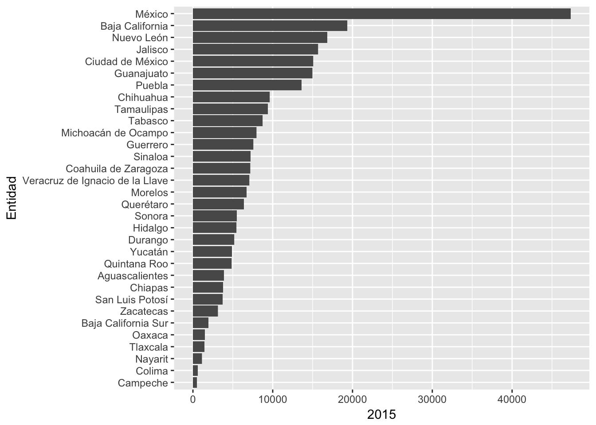
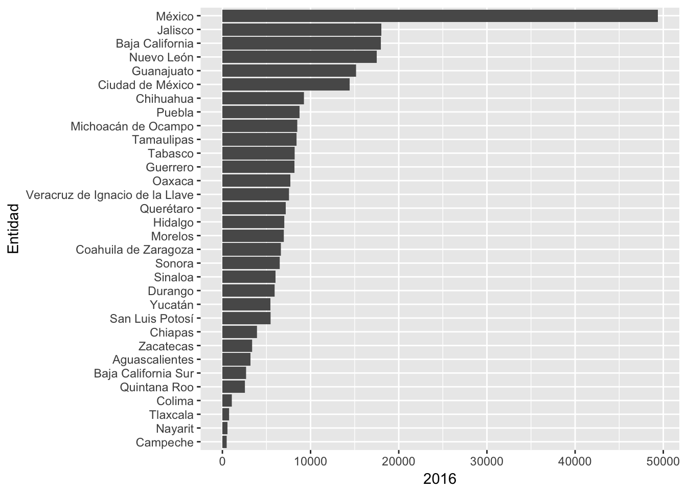
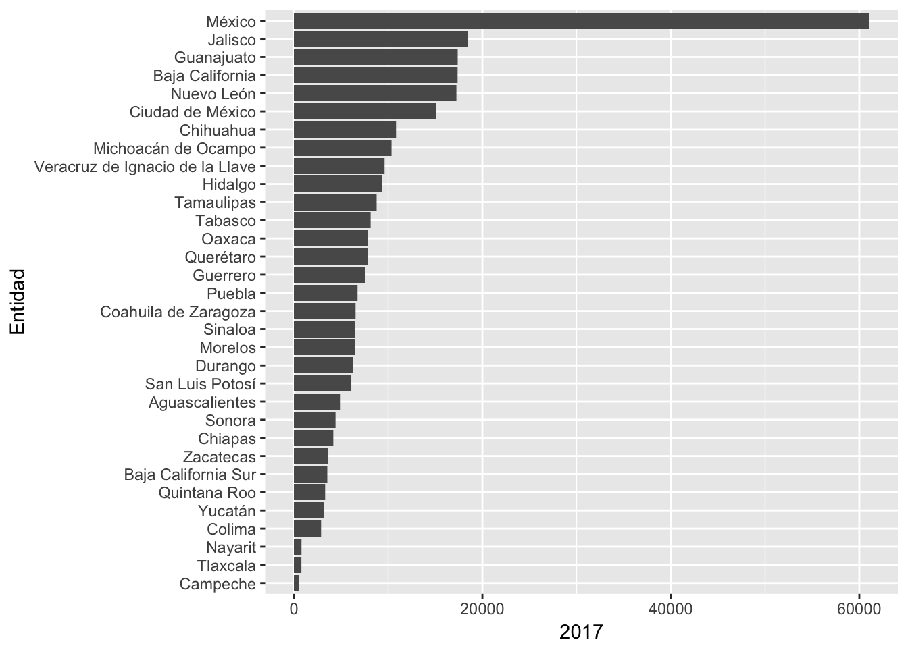
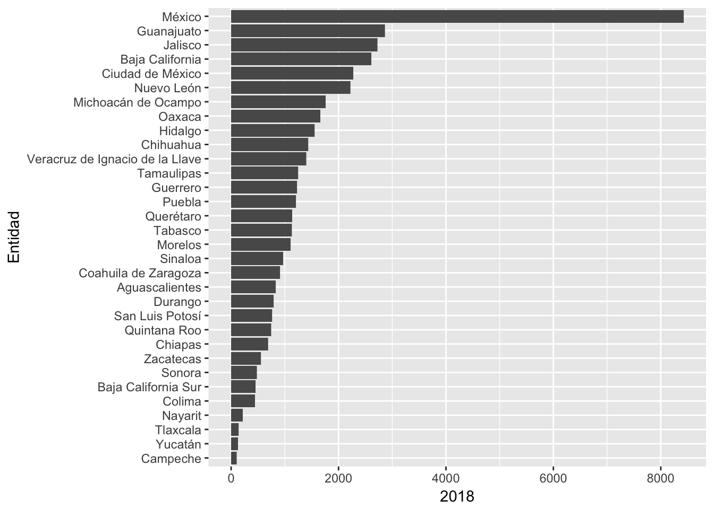

Chapter 5 Vectores
5.1 ¿Qué aprendimos la clase pasada?
- Evitar repeticiones de código por medio de funciones
- Ejecutar bloques de código usando una condición de control
- Como usar funciones creadas por nosotros en conjunto con las herramientas del tidyverse
- Buenas prácticas para la escritura de código y por qué es deseable el código limpio
5.2 Vectores, listas y arreglos
Existen dos tipos de vectores en R:
- Los vectores atómicos, que son homogeneos, es decir contienen el mismo tipo de dato en cada una de sus entradas.
- Las listas, que son heterogeneas, es decir pueden contener distintos tipos de datos en cada entrada incluso otras listas.
Los vectores atómicos pueden ser de 6 distintos tipos: logical, integer, double, character, complex, y raw.
vector_logico <- c(TRUE, FALSE, FALSE, TRUE)
vector_logico## [1] TRUE FALSE FALSE TRUEtypeof(vector_logico)## [1] "logical"vector_entero <- 1:4
vector_entero## [1] 1 2 3 4typeof(vector_entero)## [1] "integer"vector_double <- c(1.2, pi, sqrt(3))
vector_double## [1] 1.200000 3.141593 1.732051typeof(vector_double)## [1] "double"vector_char <- letters[1:4]
vector_char## [1] "a" "b" "c" "d"typeof(vector_char)## [1] "character"vector_complex <- c(1 + 1i, 5i, 5)
vector_complex## [1] 1+1i 0+5i 5+0itypeof(vector_complex)## [1] "complex"vector_raw <- c(charToRaw("the quick brown fox jumps over the lazy dog"))
vector_raw## [1] 74 68 65 20 71 75 69 63 6b 20 62 72 6f 77 6e 20 66 6f 78 20 6a 75 6d
## [24] 70 73 20 6f 76 65 72 20 74 68 65 20 6c 61 7a 79 20 64 6f 67typeof(vector_raw)## [1] "raw"Adicionalmente, los vectores integer y double se consideran en la categoría numeric.
is.numeric(vector_entero)## [1] TRUEis.numeric(vector_double)## [1] TRUEEn R los números por default son de tipo double:
typeof(6)## [1] "double"si queremos un entero anexamos una “L” al final:
typeof(1)## [1] "double"Tenemos que tener en cuenta que los doubles son aproximaciones entonces pueden pasar cosas como:
2 == sqrt(2) ** 2## [1] FALSECuando queremos comprobar igualdades con doubles es mejor usar la función near del paquete tidyverse:
library(tidyverse)
near(2, sqrt(2) ** 2)## [1] TRUEExisten valores especiales para los datos double:
c(-1, 0, 1) / 0## [1] -Inf NaN InfEn lugar de usar “==” para comprobar igualdades, existen funciones especiales:
is.infinite(-1/0)## [1] TRUEis.finite(1.5)## [1] TRUEis.na(1/0)## [1] FALSEis.nan(1/0)## [1] FALSEis.infinite(-1/0)## [1] TRUEis.finite(1.5)## [1] TRUEis.na(1/0)## [1] FALSEis.nan(1/0)## [1] FALSE5.2.0.1 Coerción
Cuando usamos un tipo de valor en un contexto que no es el natural, R intentará convertir esos valores en el tipo adecuado para el contexto:
sum(c(TRUE, FALSE, FALSE, TRUE, TRUE))## [1] 3x <- c()
if(length(x)){ # El valor 0 se interpreta como FALSE, cualquier otro valor como TRUE
print(x)
} else {
print("El vector está vacio.")
}## [1] "El vector está vacio."Las listas sirven para generar objetos más complejos:
x1 <- list(c(1, 2), c(3, 4))
x1## [[1]]
## [1] 1 2
##
## [[2]]
## [1] 3 4x2 <- list(list(1, 2), list(3, 4))
x2## [[1]]
## [[1]][[1]]
## [1] 1
##
## [[1]][[2]]
## [1] 2
##
##
## [[2]]
## [[2]][[1]]
## [1] 3
##
## [[2]][[2]]
## [1] 4Los arreglos son arreglos numéricos de varias dimensiones, por ejemplo matrices:
mi_matriz <- array(c(1, 2, 3, 4), dim= c(2, 2))
mi_matriz## [,1] [,2]
## [1,] 1 3
## [2,] 2 4typeof(mi_matriz)## [1] "double"mi_matriz <- matrix(c(1, 2, 3, 4), ncol= 2, nrow=2)
mi_matriz## [,1] [,2]
## [1,] 1 3
## [2,] 2 4typeof(mi_matriz)## [1] "double"5.3 Iteración en R
En la sección anterior se vió cómo evitar duplicar código que se usa de manera recurrente utilizando funciones. Una función abstrae una tarea y permite llevarla a cabo sin escribir código adicional, sólo necesitando ciertos parámetros de entrada.
Otra herramienta útil para evitar escribir más código son los mecanismos de iteración. Estos son útiles cuando se quiere llevar a cabo la misma tarea múltiples veces.
En esta clase aprenderemos sobre dos paradigmas de iteración: la programación imperativa y la programación funcional.
La primera es un paradigma más antiguo y permite introducirse fácilmente al tema pues hace que la iteración sea muy explícita. Como desventaja, las estructuras de este paradigma, llamados bucles (en inglés loops), tienden a ser más extensos en código. Por otro lado, la programación funcional ofrece herramientas para extraer todo el código duplicado para que cada bucle tenga su propia función. Después de un poco de práctica se puede resolver los problemas más comunes en iteración de manera más sencilla, utilizando menos código y por lo mismo cometiendo menos errores.
Antes que nada, cargaremos el conjunto de datos que se usó hace dos clases sobre violencia en México:
library("readxl")
ruta_relativa <- "./datos/Estatal_Victimas_2015_2018_feb.xlsx"
datos <- read_excel(ruta_relativa,sheet=1)5.3.1 Iteración imperativa
5.3.1.1 Bucle for
Un bucle está compuesto de una secuencia y un cuerpo que se ejecuta con base en esta secuencia.
Una secuencia:
1:5## [1] 1 2 3 4 5Un bucle for puede ejecutar el mismo código (el contenido en su cuerpo) variando un iterador. Por ejemplo el siguiente código nos muestra uno por uno los números en la secuencia misma y en cada una de esas iteraciones nos muestra la palabra “gatito”.
x <- list(7, "a", 6, "gatito")
for (i in 1:length(x)) # para la secuancia del 1 al tamaño de la lista
{
print(unlist(x[i])) # ejecutar esto
}## [1] 7
## [1] "a"
## [1] 6
## [1] "gatito"Podríamos hacer un bucle que obtenga una suma análogo a lo que hace la funcion sum():
suma <- 0
for(i in 1:20) {
suma <- suma + i
}
suma## [1] 210sum(1:20)## [1] 210La siguiente función determina si un número es par.
es_par <- function(x) {
return(x %% 2 == 0)
} Ejercicio: Utilizar la función anterior para escribir los números del 1 al 100 si el número es impar, imprimir “impar” y si el número es par, escribir el número.
Ejercicio: Utilizar la función anterior para escribir los números del 1 al 100 si el número es impar, imprimir “impar” y si el número es par, escribir el número.
impar
2
impar
4
impar
6
impar
8
.
.
.library("readxl")
setwd("/Users/agutierrez/Documents/R/r/")
ruta_relativa <- "./datos/Estatal_Victimas_2015_2018_feb.xlsx"
datos <- read_excel(ruta_relativa,sheet=1)
datos <- datos %>%
mutate(Total = select(.,Enero:Diciembre) %>% rowSums())total_zacatecas <- 0
for(i in 1:nrow(datos)) {
fila <- datos[i,]
if(fila$Entidad == "Aguascalientes" && fila$`Tipo de delito` == "Homicidio"){
total_zacatecas = total_zacatecas + fila$Total
}
}
print(total_zacatecas)## [1] 819Ahora un ejemplo que une todo lo que hemos visto hasta el momento. Usando la función que extrae los datos de homicidios dolosos para un año y un bucle generaremos una gráfica de barras por año:
extrae_homicidios_fecha <- function(datos, anio)
{
datos <- datos %>%
select(Año, Entidad,`Tipo de delito`, Modalidad, Total) %>%
filter(Año == anio)
return(datos)
}
# bucle
for (i in 2015:2018)
{
homicidios_anio <- extrae_homicidios_fecha(datos, i)
homicidios_fecha <- toString(i)
print(ggplot(data = homicidios_anio, aes(x = reorder(Entidad, Total), y = Total)) +
geom_bar(stat = "identity") +
labs(y=homicidios_fecha, x="Entidad") +
coord_flip())
}
5.3.1.2 Bucle while
While es otro tipo de bucle que se usa cuando no se conoce de antemano el número de itearaciones que se harán. ¿En qué contexto puede ocurrir esto? Usualmente ocurre en problemas de simulación o muestreo, por ejemplo:
Si quisieramos simular un dado:
dado <- function(x) {
sample(1:6, 1, replace=TRUE)
}Ahora pensamos que nos interesa una muestra de tamaño 10 de tiros de dos dados, pero con la particularidad de que la suma de los números sea menor que 8:
lanzamientos <- list()
while(length(lanzamientos) < 10) {
dado_a <- dado()
dado_b <- dado()
if(dado_a + dado_b < 8) {
lanzamientos <- c(lanzamientos, list(c(dado_a, dado_b)))
}
}
lanzamientos## [[1]]
## [1] 3 1
##
## [[2]]
## [1] 2 3
##
## [[3]]
## [1] 1 5
##
## [[4]]
## [1] 1 1
##
## [[5]]
## [1] 4 3
##
## [[6]]
## [1] 3 3
##
## [[7]]
## [1] 3 3
##
## [[8]]
## [1] 1 3
##
## [[9]]
## [1] 2 1
##
## [[10]]
## [1] 1 25.3.2 Iteración funcional
Ya se introdujo la idea de que se puede utilizar una función dentro de otra función. En esta sección se aprenderá a utilizar el paquete purr, que elimina la necesidad de aprender a generar bucles complejos. La base de R tiene funciones con la misma idea (apply(), lapply(), tapply(), etc) pero purr tiende a ser más consistente y por lo tanto más fácil de aprender a usar.
Si se quiere indagar en las funcones apply se puede consultar esta liga:
https://www.datacamp.com/community/tutorials/r-tutorial-apply-family#gs.bJ=BAKY
El objetivo de las funciones de purr es ayudar a romper las tareas de manipulación de listas en pedazos independientes:
Primero se debe plantear la interrogante ¿Cómo se puede resolver el problema de interés para un único elemento de la lista? Luego purr ayuda a generalizarlo a cada elemento de la lista.
5.3.2.0.1 La función map
La tarea de barrer un vector, hacer algo a cada elemento y luego guardar los resultados es tan común que el paquete purr provee una familia de funciones para llevar esto a cabo.
Existe una función para cada tipo de salida:
- map() genera una lista.
- map_lgl() genera un vector de valores lógicos.
- map_int() genera un vector de valores enteros.
- map_dbl() genera un vector de valores dobles (números reales).
- map_chr() genera un vector de valores texto.
Cada una de estas funciones recibe como entrada un vector, aplica una función elegida por el usuario a cada pedazo y regresa un vector de la misma longitud que el original (y con los mismos nombres).
Por ejemplo para calcular la media de cada columna de la tabla de datos de coches basta con hacer
map_dbl(mtcars, mean)Supongamos que tenemos ahora diversas fuentes de datos que queremos operear en paralelo.
x <- c(1, 2, 3, 4, 5, 6, 7, 8, 9, 10)
y <- c(32, 54, 52, 53, 67, 89, 100, 54, 75, 27)
z <- map2_dbl(x, y, function(x,y){ return(x + y) })
zPara evitar la declaración de la función que suma dentro de la llamada podemos hacer:
mi_suma <- function(x,y){
return(x + y)
}
z <- map2_dbl(x, y, mi_suma)
zPero el paquete purrr (parte del tidyverse) permite una sintaxis especial. Sustituimos la palabra function por una “~” y accesamos a las variables de entrada por medio del placeholder “.”:
z <- map2_dbl(x, y, ~ .x + .y)
z Ejercicio: ¿Qué diferencia hay entre usar la función map2_dbl y la función map2?
Ejercicio: Existe un análogo a la función map2 para más fuentes de datos llamada pmap. Escribe un ejemplo para sumar 3 vectores usando esta función.
5.3.2.0.2 La función walk
Es una alternativa a map cuando se quiere llamar una función más por sus efectos que por sus resultados. Esto es, sirve para llevar a cabo un proceso a lo largo de, por ejemplo, un vector.
Un ejemplo muy simple
x <- list(7, "a", 6, "gatito")
x %>%
walk(print) # si se fijan hace algo muy parecido a nuestro primer ejemplo de bucleLas funciones map() y walk() iteran sobre múltiples arugmentos en paralelo, map2() y walk2() se especializan en el caso particular de 2 argumentos y pmap() y pwalk() en el caso de un número ilimitado de argumentos en una lista. La función walk, en general, no es tan útil como las funciones walk2() or pwalk().
Para replicar el ejercicio de separar la tabla de datos de homicidios se puede usar map() seguido de pwalk() para además guardar los plots como pdf.
plots <- datos %>%
split(.$Año) %>% # nota importante: "." al usar map sirve para algo análogo a "i" en los bucles
map(~ggplot(data = ., aes(x = reorder(Entidad, Total), y = Total)) +
geom_bar(stat = "identity") +
labs(y=.$Año, x="Entidad") +
coord_flip())
print(plots)## $`2015`
##
## $`2016`
##
## $`2017`
##
## $`2018`
paths <- stringr::str_c(names(plots), ".pdf")
pwalk(list(paths, plots), ggsave, path = getwd())
getwd() Tarea: desarrollar un script que incluya una función que lleve a cabo un proceso que generalmente llevarías a cabo usando otra herramienta, por ejemplo excel, sobre una tabla de datos propia. Explicar lo que se llevó a cabo.